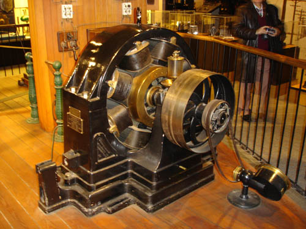

Education
After studying at the Realschule, Karlstadt (later renamed the
Johann-Rudolph-Glauber Realschule Karlstadt) in Germany; the
Polytechnic Institute in Graz, Austria; and the University of Prague
during the 1870s, Tesla moved to Budapest, where for a time he
worked at the Central Telephone Exchange.
It was while in Budapest that the idea for the induction motor first
came to Tesla, but after several years of trying to gain interest in
his invention, at age 28 Tesla decided to leave Europe for America.
Nikola Tesla vs. Thomas Edison
In 1884 Tesla arrived in the United States with little more than the
clothes on his back and a letter of introduction to famed inventor
and business mogul Thomas Edison, whose DC-based electrical works
were fast becoming the standard in the country. Edison hired Tesla,
and the two men were soon working tirelessly alongside each other,
making improvements to Edison's inventions. Several months later,
the two parted ways due to a conflicting business-scientific
relationship, attributed by historians to their incredibly different
personalities: While Edison was a power figure who focused on
marketing and financial success, Tesla was commercially out-of-touch
and somewhat vulnerable.
First Solo Venture
In 1885, Tesla received funding for the Tesla Electric Light Company
and was tasked by his investors to develop improved arc lighting.
After successfully doing so, however, Tesla was forced out of the
venture and for a time had to work as a manual laborer in order to
survive. His luck would change two years later when he received
funding for his new Tesla Electric Company.
Inventions
Throughout his career, Tesla discovered, designed and developed
ideas for a number of important inventions — most of which were
officially patented by other inventors — including dynamos
(electrical generators similar to batteries) and the induction
motor. He was also a pioneer in the discovery of radar technology,
X-ray technology, remote control and the rotating magnetic field —
the basis of most AC machinery. Tesla is most well-known for his
contributions in AC electricity and for the Tesla coil.
AC Electrical System
Tesla designed the alternating-current (AC) electrical system, which
would quickly become the preeminent power system of the 20th century
and has remained the worldwide standard ever since. In 1887, Tesla
found funding for his new Tesla Electric Company, and by the end of
the year, he had successfully filed several patents for AC-based
inventions. Tesla's AC system soon caught the attention of American
engineer and businessman George Westinghouse, who was seeking a
solution to supplying the nation with long-distance power. Convinced
that Tesla's inventions would help him achieve this, in 1888 he
purchased his patents for $60,000 in cash and stock in the
Westinghouse Corporation. As interest in an AC system grew, Tesla
and Westinghouse were put in direct competition with Thomas Edison,
who was intent on selling his direct-current (DC) system to the
nation. A negative press campaign was soon waged by Edison, in an
attempt to undermine interest in AC power. Unfortunately for Edison,
the Westinghouse Corporation was chosen to supply the lighting at
the 1893 World's Columbian Exposition in Chicago, and Tesla
conducted demonstrations of his AC system there.

Above: Tesla's Alternating Current Motor found at the Smithsonian
Institution in Washington D.C. (For more information go to:
Smithsonian Institution (Museum) in Washington D.C. pays tribute
to Nikola Tesla)
Hydroelectric Power Plant
In 1895, Tesla designed what was among the first AC hydroelectric
power plants in the United States, at Niagara Falls. The following
year, it was used to power the city of Buffalo, New York — a feat
that was highly publicized throughout the world and helped further
AC electricity’s path to becoming the world’s power system.

Above: The Niagara Falls Hydraulic Power & Manufacturing Company,
which constructed a canal for hydraulic power generation nearly 20
year prior, began operating a small electrical plant in Niagara
Falls, New York in 1882.
Tesla Coil
In the late 19th century, Tesla patented the Tesla coil, which laid
the foundation for wireless technologies and is still used in radio
technology today. The heart of an electrical circuit, the Tesla coil
is an inductor used in many early radio transmission antennas.


From left to right:Tesla coil patent print. Tesla at the
background studying while bolts of electricity discharging in the
lab.